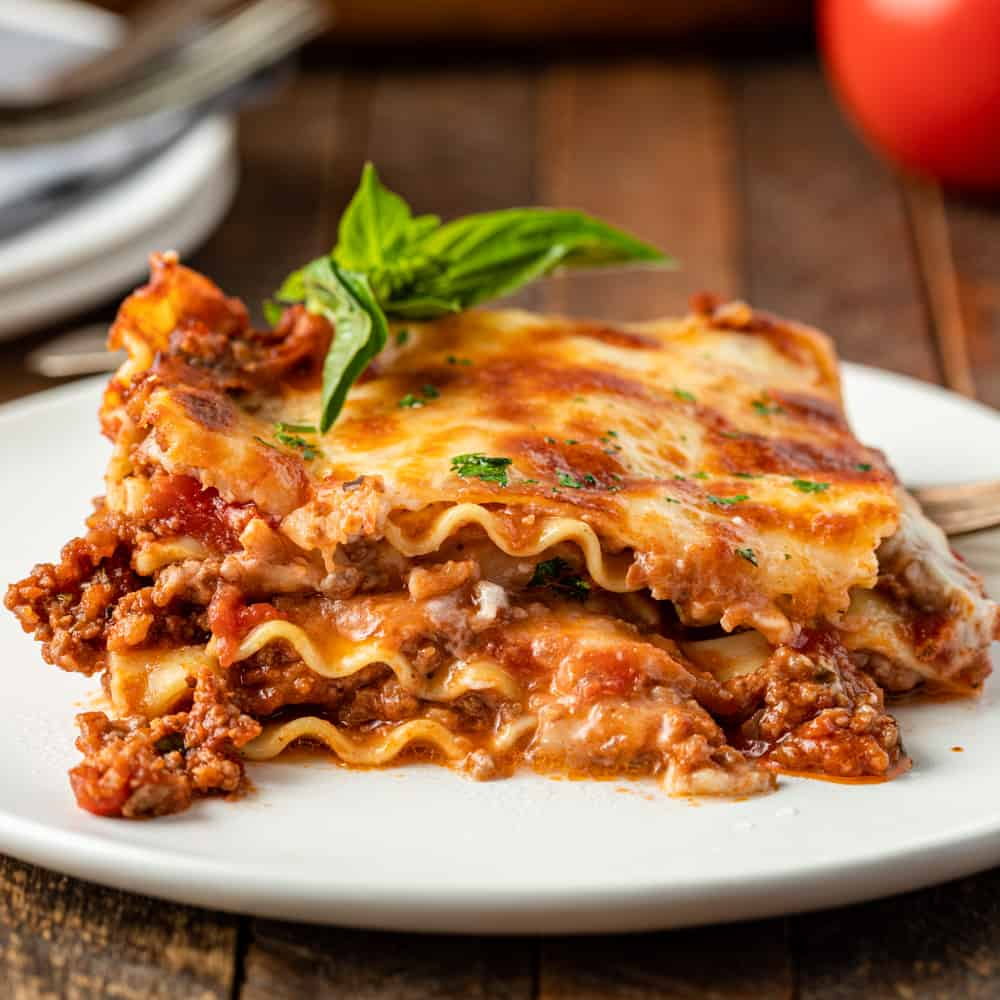

Lasagna

Lasagna is the ultimate comfort food, a hearty Italian dish made with
layers of pasta, rich meat sauce, and plenty of melted cheese. Each
forkful offers a perfect harmony of flavors and textures, from the tender
pasta to the savory meat sauce and the creamy cheese topping. Whether it's
for a cozy family dinner or a gathering with friends, lasagna always
promises satisfaction and warmth.
Ingredients
For the Meat Sauce
- 1 lb ground beef (or ½ lb beef + ½ lb Italian sausage)
- 1 small onion, diced
- 3 cloves garlic, minced
- 1 (28 oz) can crushed tomatoes
- 1 (15 oz) can tomato sauce
- 2 tbsp tomato paste
- 1 tsp sugar (optional, balances acidity)
- 1 tsp salt
- ½ tsp black pepper
- 1 tsp dried basil
- 1 tsp dried oregano
- ½ tsp red pepper flakes (optional)
For the Cheese Layer
- 15 oz ricotta cheese
- 1 egg
- ½ cup grated Parmesan cheese
- 2 tbsp chopped fresh parsley (or 1 tsp dried)
- ½ tsp salt
Other
- 9-12 lasagna noodles (regular or oven-ready)
- 3 cups shredded mozzarella cheese
Instructions
Make the Meat Sauce
- In a large skillet, brown the beef over medium heat.
- Add onion and cook until soft (about 5 minutes).
- Stir in garlic and cook 30 seconds.
-
Add crushed tomatoes, tomato sauce, tomato paste, and seasonings.
- Simmer uncovered for 20-30 minutes, stirring occasionally.
Prepare the Cheese Mixture
- In a bowl, mix:
- Ricotta
- Egg
- Parmesan
- Parsley
- Salt
- Stir until smooth.
Cook the Noodles
-
If not using oven-ready noodles, boil according to package directions.
Drain and lay flat.
Assemble (in a 9x13 pan)
- Layer in this order:
- Thin layer of meat sauce
- Noodles
- Ricotta mixture
- Mozzarella
- Meat sauce
- Repeat layers 2-3 times.
- Finish with sauce and remaining mozzarella on top.
Bake
- Cover with foil (tent so cheese doesn't stick)
- Bake at 375°F for 25 minutes
- Remove foil and bake another 15-20 minutes until bubbly
- Let rest 10-15 minutes before slicing
Home